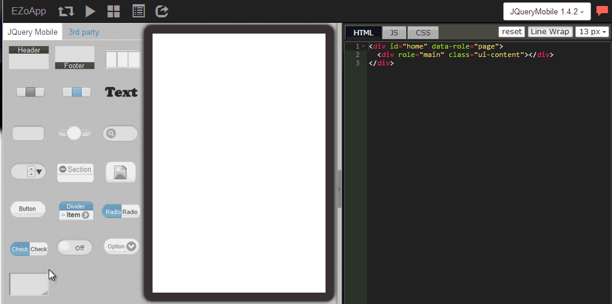
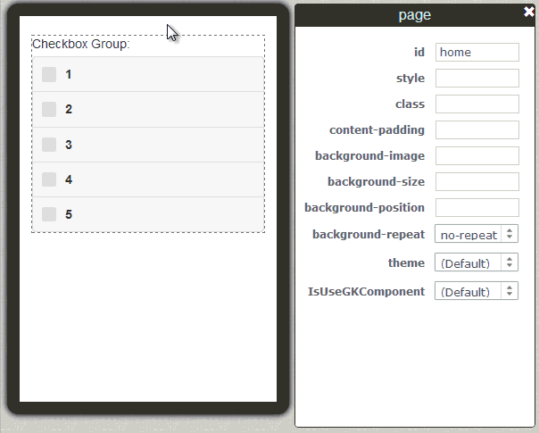

除了上一節介紹的下拉選單，CheckBox 也是網頁表單與 app 表單中相當常見的功能，以往我們使用 CSS ，面對這類型的表單元素都很難修改樣式，而且不同瀏覽器上顯示的樣式甚至不盡相同真是令人相當的頭疼。
但是現在有了 EZoApp 之後，大家就可以利用 EZoApp 的拖拉方式，快速的建立 CheckBox，只需要用滑鼠點選，就能夠進行水平和垂直方式的排列，而且樣式也採用 JQueryMobile 的標準樣式，也是在行動裝置上常見的樣式，省去了許多不必要的麻煩工作。
如果大家不滿足於基本的黑白兩種樣式，可以自己嘗試看看使用 HTML 或 CSS 來進行編輯，可以參考前幾篇「製作特色按鈕」、「使用 google font」，都有一些不錯的教學介紹喔！
範例連結：
基本元件實作 - 設計 ChecBox (垂直)
基本元件實作 - 設計 CheckBox (水平)

一如往常，使用 EZoApp 就是要使用它好用的元件，直接利用拖拉的方式，將 controlgroup-checkbox 的元件拖曳到編輯區域，就會自動產一個 CheckBox 元件。
接下來我們利用之前介紹過的方法，點選 CheckBox 的選項，按下右上方的綠色加號，就會自動新增選項了。

如果我們要改變垂直或水平的方向該怎做呢？只要打開屬性面板，直接做方向的修改就可以囉！
一直到這一個步驟之前都相當容易，基本上都只需要動動滑鼠就可以解決，而這個步驟我們就是要直接修改樣式，讓 CheckBox 看起來更為美觀。修改的方式就是修改標題 legend 標籤的樣式，大家可以貼上下列紅色的的程式碼，就可以看到樣式的變化。
<legend style="-webkit-border-radius:10px 10px 0 0; background:-webkit-linear-gradient(#99f,#33a); text-shadow:none; color:#fff; width:279px; height:30px; padding-top:7px; padding-left:10px; margin-bottom:-6px;">Checkbox Group</legend>

使用了 EZoApp 之後，是不是覺得在設計畫面上變得相當的直覺容易呢！這就是 EZoApp 最好用的特色之一喔！
範例連結：
基本元件實作 - 設計 ChecBox (垂直)
基本元件實作 - 設計 CheckBox (水平)